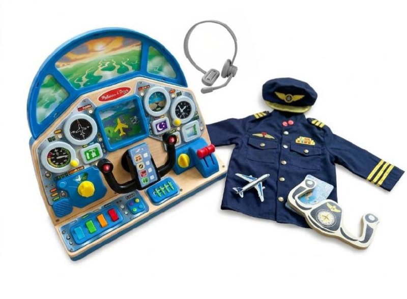
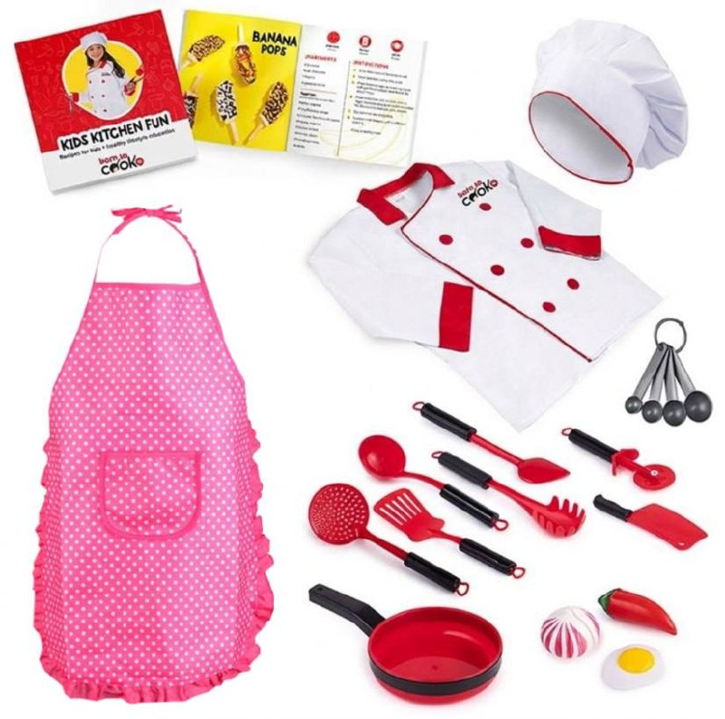

Kid's Airline Pilot Role-Play Costume Set
Manufacturer/Brand: Mellisa & Doug & Yiwu Baige International Trade Co.,Ltd.
Short History: Inspired by classic commercial aviation uniforms and popularized in toy aisles by brands like Melissa & Doug in the 2000s, lightweight machine-washable pilot jackets with cardboard/foam cockpit props became a go-to outfit for school "Ambition/Career Day" events.
Category: Career Dress-Up Costumes & Aviation Pretend Play.
Age Range: 3 to 8 years old.
Materials: Jacket, Cap, Miniature Airplane, World Map, Flight Aircraft Cockpit Simulation Toy with Music, Steering Wheel, Control Panel and Aviation Headset.
Fun Facts: Featuring three gold sleeve stripes on the jacket, including shoulder epaulettes, gold wing badges, and a matching pilot garrison cap, which signifies a Senior First Officer/Captain in role-play uniforms.
3D Illustrative visual

Interactive Kids Doctor Medical Cart Playset
Manufacturer/Brand: OEM Chinese toy & Xiong Cheng.
Short History: Doctor playsets began in the early 20th century to ease kids' fear of doctors through role-play, evolving in the 2010s–2020s from simple bags into rolling hospital carts with lights, sounds, and mock screens.
Category: Medical & Healthcare Pretend Play.
Age Range: 3 to 8 years old.
Materials: ABS and PP molded plastic, polyester fabric doctor's coat and cap, paper/cardboard for the medicine boxes and X-ray/patient cards.
Fun fact: Several tools—such as the stethoscope, thermometer, and monitor screen—include built-in LED lights and sound effects (like a heartbeat or temperature beep).
3D Illustrative visual

Born Toys Chef Costume for Kids
Manufacturer/Brand: Born Toys & Bintiva.
Short History: Born Toys & Bintiva.
Category: Born Toys & Bintiva.
Age range: Born Toys & Bintiva.
Materials: Born Toys & Bintiva.
Fun facts: Born Toys & Bintiva.